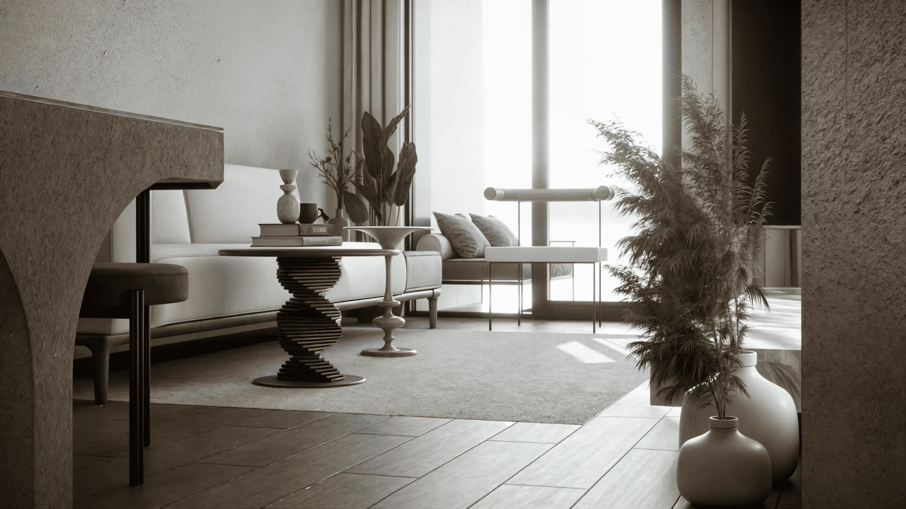
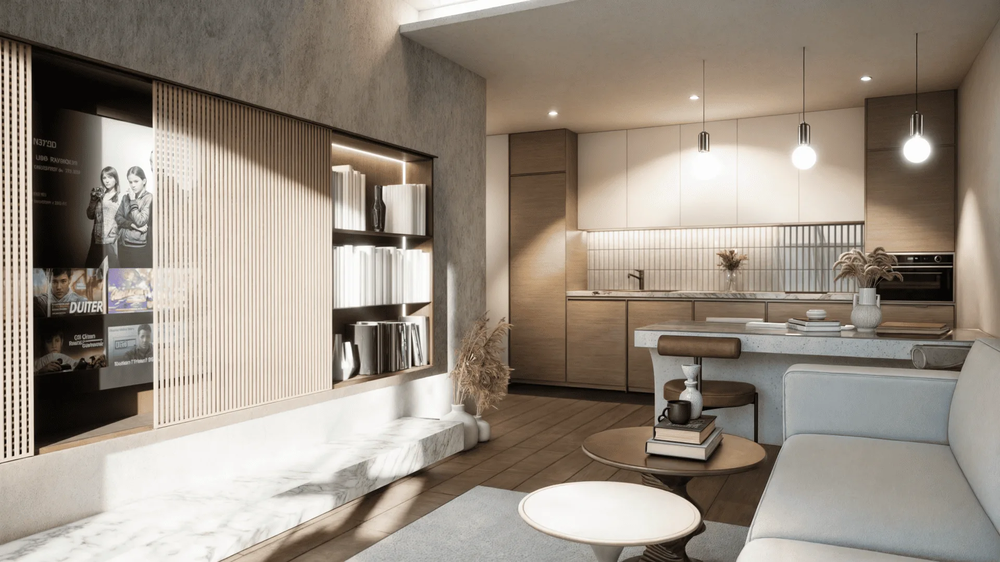
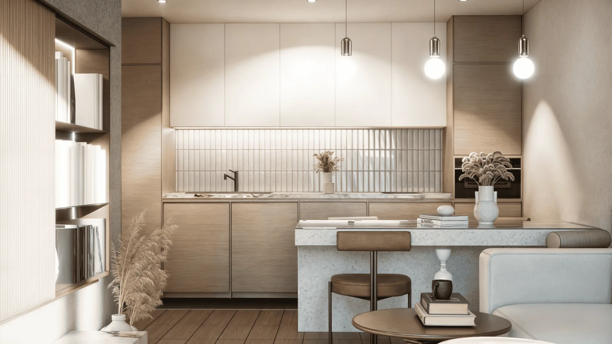
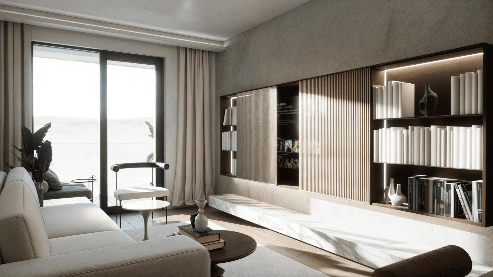
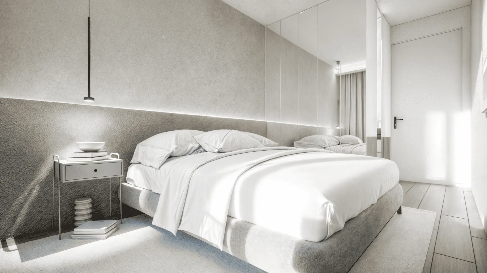

Apartment Sakura 2/24
Beograd, Srbija, 2023
Ovaj beogradski stan ide u svetlom, toplom pravcu. Teksturisani malterisani zidovi, svetli hrast i duga mermerna klupa određuju dnevnu sobu, u kojoj žljebljeni drveni klizni panel skriva televizor i pretvara zid sa medijima u biblioteku kada je ekran isključen.
Kuhinja sa ostrvom smeštena je u blago osvetljenoj niši, a spavaća soba ponavlja paletu maltera i drveta uz zid uzglavlja do plafona. Cilj je bio miran, prirodan enterijer u kome se lako živi svakog dana.





Sledeći projekatApartment Sakura 1/24Pogledaj projekat